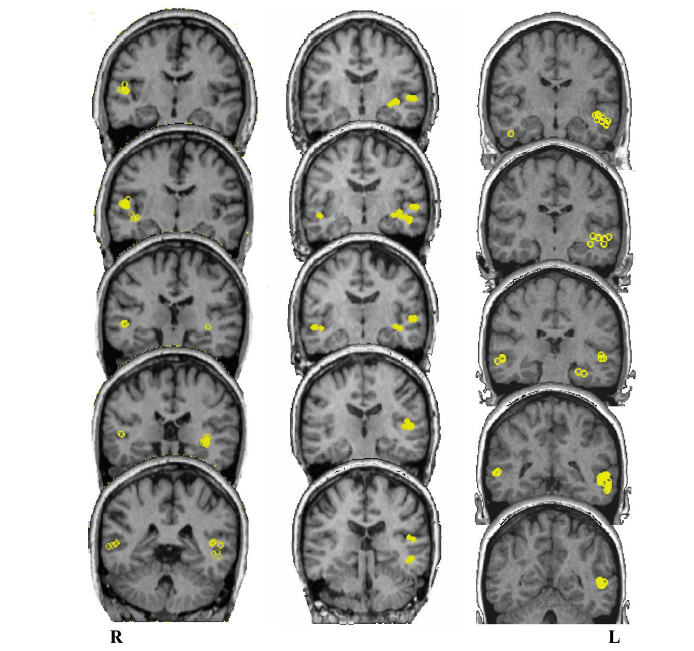

Neurophonetics
Vijay Solanki
Week 10
Thurs 9th March 2017
What is Neurophonetics?
''Neurophonetics deals with neurogenic impairments of the motor act of speaking and of the perceptual processes of spoken language understanding, with the aim of unravelling the neural organization of speech motor control and speech perception.''
(Ziegler 2008: 491)
''Neurophonetics aims at the elucidation of the brain mechanisms underlying speech communication in our species''
(Hertrich & Ackermann 2013)
''To the extent that phonetics is a subdiscipline of linguistics, neurophonetics can be viewed as a subdiscipline of neurolinguistics''
(Ziegler 2008)
Lecture Outline
- Anatomy & Physiology of the Brain
- The WLG Model
- Measurement Tools
- Modern Advances
- Classic Neuroimaging Studies
- Anatomical Contributions
- The Integration Problem
- Conclusion
Warning slide
There will be some bloody(ish) images
Anatomy and physiology of the brain
The brain is made of NEURONS and GLIAL CELLS (but glial cells are not discussed here)
NEURONS are arranged into layers which allow for the efficient transfer of information, carried as electrical impulses
NEURONAL LAYERS in different areas are arranged to maximise processing efficiency for the functions that they are required to perform and provide the basis for the larger structures of the brain
Neurons
Neurons transmit information to other neurons or muscles (via the brain stem)
FIRING: electrical ACTION POTENTIAL travels down AXON to SYNAPSE (junction)
A NEUROTRANSMITTER is released which either EXCITES or INHIBITS the post-synaptic cell

MYELIN encases important connections, both to protect vital information transfer routes and to speed up transmission of the action potential

Neuronal Layers
Neurons are arranged into layers specific to the functions that they are required to perform
Neurons that perform similar functions are LOCALISED to a particular region of the brain
Brain Structure
Genes to Cognition Online
www.g2conline.orgThe Cerebrum
Cerebrum = 2 hemispheres
Each hemisphere is divided into 4 lobes:
- Frontal
- Parietal
- Temporal
- Occipital
The cerebral cortex
Cerebral cortex = surface of cerebrum
Cortex can be roughly divided into areas of functions
e.g. language, personality, vision, audition, motor and sensory functions
Photograph by Robert Ludlow.
Wellcome Trust Image Awards winner 2012.
Left & right hemispheres
Different networks of connectivity
| MOVEMENT SENSATION | Planning & execution cross sides |
Left Brain – Right Brain
WRONG
Nielsen, et al. (2013)
Hemispheric functions
Each hemisphere has specific processing strengths, eg:
| Left Hemisphere | Right Hemisphere |
|---|---|
| Important for language processing, mathematical functioning | Important for processing visual and spatial information |
| (Hervé, et al. 2013, Jolles et al. 2015) | (Hervé, et al. 2013) |
Within the cerebrum
Cortex (cerebrum surface):
- Grey matter (nerve cell bodies)
- Some white matter
Subcortical areas:
- Grey matter
- White matter fibres (eg.):
- Corpus Callosum (connects right and left hemispheres)
-
Arcuate Fasciculus(connects motor and sensory cortices)
The WLG Model
Phineas Gage
1823-1861, accident in 1848
Phineas Gage (1848)

|
Phineas Gage (1848)
Trauma to frontal lobe
One of first cases to highlight role of frontal lobe in:
- Personality
- Emotional regulation
- Decision making / Problem solving
What does this suggest?
- Specific brain functions are grouped in specialised regions
- We say that brain function is LOCALISED
Brain Pathology and Language
Aphasia:
Loss or impairment of the ability to produce or comprehend language, due to brain damage
Various types:
- Global
- Broca’s/motor
- Wernicke’s/jargon/anomic
Broca & Wernicke
|
Paul Broca (1824-1880) Broca’s patient, ‘Tan’ – 1861: Problem with production (only one syllable ‘tan’) Large cyst in the left hemisphere (“mushy and deformed”) |
|
Karl Wernicke (1848-1905) Wernicke’s patient – 1874: Patient who could speak but couldn’t comprehend language Lesion at the crossroads of 2 lobes of the brain |
Broca’s Area
Where?
Frontal lobe - Inferior frontal gyrus
- Pars opercularis
- Pars triangularis
|
Anwander, et al. (2007) |
Broca’s Aphasia
Function
- Motor language area
- Expression
Aphasia
- Motor / non-fluent aphasia
- Good comprehension, no/impaired speech
- E.G. ‘boy go store’ vs ‘The boy has gone to the store’
- Slow, laboured, ungrammatical speech
- “yes…ah…Monday…ah…dad and…and…ah…hospital….and ah….Wednesday….Wednesday”
Broca’s Area
Photograph of the brain of Paul Broca’s patient called “Tan”
Wernicke’s Area
Where?
Temporal/Parietal lobe
- Supramaringal gyrus
- Angular gyrus
|
Andoh, et al. (2008) |
Wernicke’s Aphasias
Function
- Sensory language area
- Comprehension
Aphasia
- Fluent / Receptive (cortical sensory) aphasia
- Defect in comprehension, good spontaneous speech
- Anomic aphasia - word finding difficulty
- Slow, laboured, ungrammatical speech
- Jargon aphasia - fluent, but unintelligible jargon
The WLG Model

Broca’s and Wernicke’s areas are connected via the ARCUATE FASCICULUS
This view was dominant for more than a century and still carries weight today
It is known as the Wernicke-Lichtheim-Gerschwind Model (WLG model), named after those that helped to develop it
Summary
- Broca’s area
- Inferior frontal gyrus (frontal lobe)
- Good comprehension but impaired speech
- Seat of language production(?)
- Wernicke’s area
- Supramaringal/angular gyrus (temporal/parietal lobe)
- Good production but defect in comprehension
- Seat of language comprehension(?)
- Both localised to left hemisphere
- They operate together as part of a larger network
Measurement Tools
Modern Advances
Classic neuroimaging evidence about language processing
Scott, et al (2000)
Normal Speech (Sp)
Spectrally Rotated Speech (RSp)
Vocoded Speech (VCo)
Rotated vocoded Speech (RVCo)
Classic neuroimaging evidence about language processing
Scott, et al (2000)
Red = Responses to sounds with phonetic information
ie. Sp, RSp & VCo
Yellow = Responses to sounds that are intelligible
ie. Sp & VCo
Classic neuroimaging evidence about language processing
Davis & Johnsrude (2003)
English sentences, distorted in a variety of ways.
Looked for correlations between blood flow and intelligibility of speech sounds
|
|
|
| Left: intelligible speech vs noise | Right: responses to different forms of distortion |
Classic neuroimaging evidence about language processing
Hickock & Poeppel (2004)
Superior Temporal Gyrus
- Bilateral (both hemispheres)
- Acoustic-phonetic forms
Dorsal Stream (left only)
- Wernicke’s area
- Broca’s area
- Motor cortex
- Articulatory forms
Ventral Stream (left only)
- Posterior Inferior Temporal Lobe
- Sound-meaning interface
Lateralisation of language functions
| Left Hemisphere | Right Hemisphere |
|---|---|
|
Traditionally thought to be dominant for language processing Preference for intelligible speech |
Damage may spare production and comprehension, but can lead to problems with: pragmatic ability, prosody, speaker characteristics (phonagnosia), recognition of music & environmental sounds |
| Possibly more sensitive to phonetic form with better time resolution (limited evidence) | Possibly more sensitive to speaker characteristics with better frequency resolution (limited evidence) |
Lateralisation of language functions
Spoken word recognition test, was used to establish cerebral dominance
Lateralisation (%Ss):
- Spanish 100% left
- English 80% left
- Chinese 79% bilateral
(tone lang.)
Language Processing Beyond the Cortex
| Cerebellum | Basal Ganglia | Thalamus | Hippocampus |
|---|---|---|---|
| Co-ordinates muscle groups to produce smooth speech & swallowing. | Controls muscles of face, larynx, tongue and pharynx | Inner chamber determines which sensory information to forward to cortex | Long-term memory, language comprehension, word-generation |
| Helps integrate sensory perception and motor output. | Damage can lead to lack of coordination and facial expression (e.g. Parkinson’s) | Damage can lead to deficits in memory, attention, reduced spontaneous speech | Damage (severe in Alzheimer's) can lead to word-finding difficulties |
| Damage can lead to slurring of speech | Also disruption to rhythm and temporal processing |
Neural correlates of phonetic skill
“Born with an ear for dialects?” In naïve (English) listeners, an individual’s brain structure in left auditory cortex, parietal cortex, and left inferior frontal cortex partly predicts their ability to discriminate a difficult contrast (Hindi dental vs. retroflex) (Golestani et al., 2002, 2007) In phoneticians, years of transcription experience correlate with size of left pars opercularis (Golestani et al., 2011) Phoneticians are also more likely to have multiple or split left transverse gyri in auditory cortex (thought to develop in utero)Conclusion?
“it takes the whole brain and, by extension, the whole person to participate in producing and perceiving a voice”
Sidtis & Kreiman (2011)
References
Anwander, A., Tittgemeyer, M., von Cramon, D. Y., Friederici, A. D. & Knцsche, T. R. (2007). Connectivity-Based Parcellation of Broca's Area.. Cerebral cortex (New York, N.Y. : 1991) 17 (4), 816--25.
Bastos, A. M., Vezoli, J. & Fries, P. (2015). Communication through coherence with inter-areal delays. Current Opinion in Neurobiology 31, 173--180.
Brunet, N., Vinck, M., Bosman, C. A., Singer, W. & Fries, P. (2014). Gamma or no gamma, that is the question. Trends in Cognitive Sciences 18 (10), 507--509.
Feng, S., Legault, J., Yang, L., Zhu, J., Shao, K. & Yang, Y. (2015). Differences in grammatical processing strategies for active and passive sentences: An fMRI study. Journal of Neurolinguistics 33 (0), 104--117.
Francis, A. L. & Driscoll, C. (2006). Training to use voice onset time as a cue to talker identification induces a left-ear/right-hemisphere processing advantage.. Brain and language 98 (3), 310--8.
Friederici, A. D. (2011). The brain basis of language processing: from structure to function.. Physiological reviews 91 (4), 1357--92.
Fries, P., et al. (2005). A mechanism for cognitive dynamics: neuronal communication through neuronal coherence. Trends in cognitive sciences 9 (10), 474--480.
Ghitza, O., Giraud, A.-L. & Poeppel, D. (2012). Neuronal oscillations and speech perception: critical-band temporal envelopes are the essence.. Frontiers in human neuroscience 6 (340), 340.
Giraud, A.-L. & Poeppel, D. (2012). Cortical oscillations and speech processing: emerging computational principles and operations.. Nature neuroscience 15 (4), 511--7.
Golestani, N., Paus, T. & Zatorre, R. J. (2002). Anatomical Correlates of Learning Novel Speech Sounds. Neuron 35 (5), 997--1010.
Golestani, N., Price, C. J. & Scott, S. K. (2011). Born with an ear for dialects? Structural plasticity in the expert phonetician brain.. The Journal of neuroscience : the official journal of the Society for Neuroscience 31 (11), 4213--20.
Gross, J., Hoogenboom, N., Thut, G., Schyns, Philippe Phillippe, Panzeri, S., Belin, P., Garrod, S. & Stefano, P. (2013). Speech rhythms and multiplexed oscillatory sensory coding in the human brain.. PLoS biology 11 (12), e1001752.
Hertrich, I. & Ackermann, H. (2013). Neurophonetics. Wiley Interdisciplinary Reviews: Cognitive Science 4 (2), 191--200.
Hervé, P.-Y., Zago, L., Petit, L., Mazoyer, B. & Tzourio-Mazoyer, N. (2013). Revisiting human hemispheric specialization with neuroimaging.. Trends in cognitive sciences 17 (2), 69--80.
Hickok, G. & Poeppel, D. (2004). Dorsal and ventral streams: a framework for understanding aspects of the functional anatomy of language.. Cognition 92 (1-2), 67--99.
Kim, J., Lee, S.-K. & Lee, B. (2014). EEG classification in a single-trial basis for vowel speech perception using multivariate empirical mode decomposition. Journal of Neural Engineering 11 (3), 36010--36021.
Mehta, R. K. & Parasuraman, R. (2013). Neuroergonomics: A Review of Applications to Physical and Cognitive Work. Frontiers in Human Neuroscience 7 (889).
Nielsen, J. A., Zielinski, B. A., Ferguson, M. A., Lainhart, J. E. & Anderson, J. S. (2013). An evaluation of the left-brain vs. right-brain hypothesis with resting state functional connectivity magnetic resonance imaging.. PloS one 8 (8), e71275.
Scott, S. K. (2000). Identification of a pathway for intelligible speech in the left temporal lobe. Brain 123 (12), 2400--2406.
Scott, S. K., McGettigan, C. & Eisner, F. (2009). A little more conversation, a little less action–candidate roles for the motor cortex in speech perception.. Nature reviews. Neuroscience 10 (4), 295--302.
Sidtis, D. & Kreiman, J. (2012). In the beginning was the familiar voice: personally familiar voices in the evolutionary and contemporary biology of communication. Integrative psychological & behavioral science 46 (2), 146--59.
Valaki, C. E., Maestu, F., Simos, P. G., Zhang, W., Fernandez, A., Amo, C. M., Ortiz, T. M. & Papanicolaou, A. C. (2004). Cortical organization for receptive language functions in Chinese, English, and Spanish: a cross-linguistic MEG study. Neuropsychologia 42 (7), 967--79.
Van Horn, J. D., Irimia, A., Torgerson, C. M., Chambers, M. C., Kikinis, R. & Toga, A. W. (2012). Mapping Connectivity Damage in the Case of Phineas Gage. PLoS ONE 7 (5), e37454.
Zatorre, R. J., Belin, P. & Penhune, V. B. (2002). Structure and function of auditory cortex: music and speech. Trends in cognitive sciences 6 (1), 37--46.